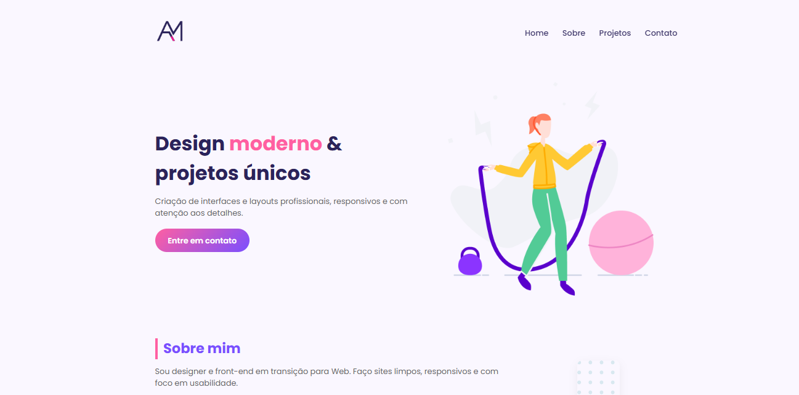
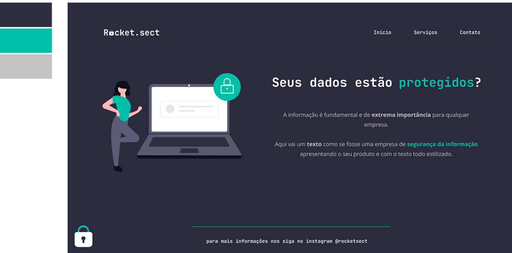
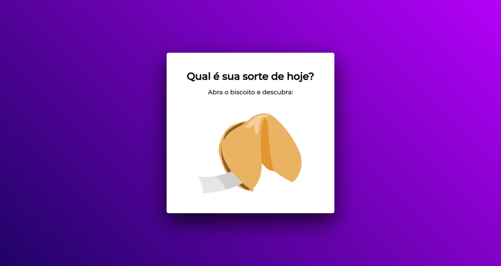
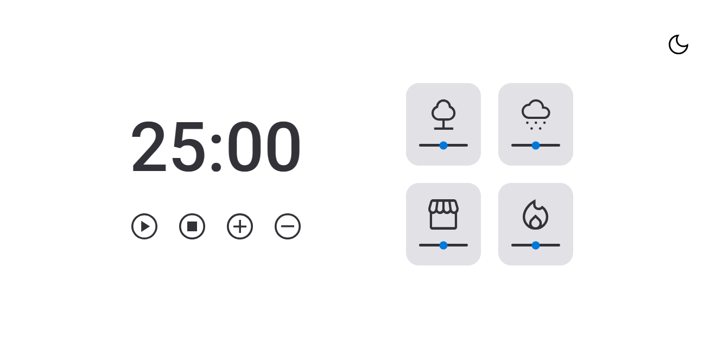
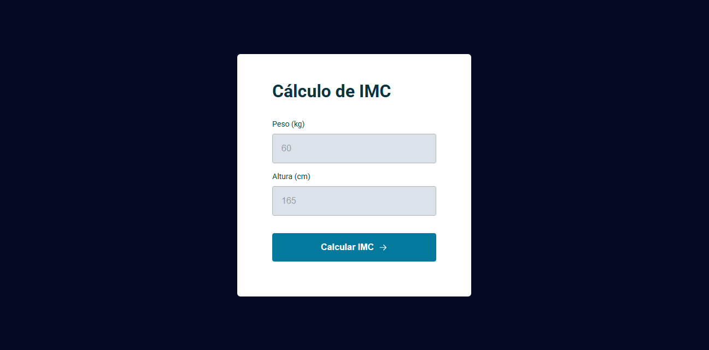
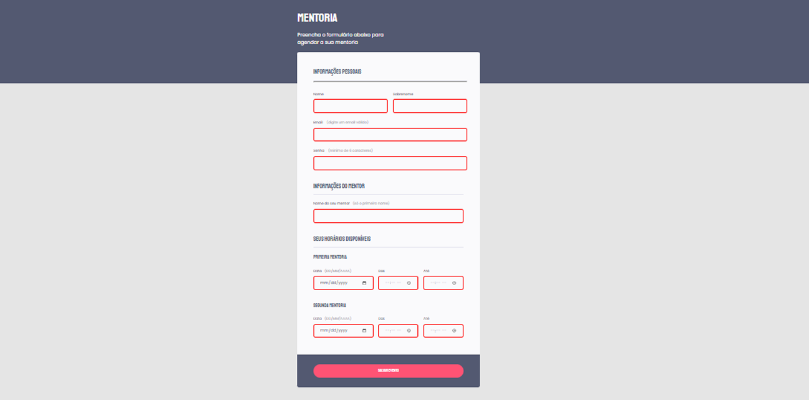

Showcase de Projetos
Descrição: Página pessoal que reúne meus projetos e apresenta minhas habilidades,
trajetória e contato — serve como vitrine online do meu trabalho.
Tecnologias: HTML, CSS, JavaScript
Diferencial: Estrutura clara e organizada que agrupa diversos projetos em um só lugar —
demonstra capacidade de design de interface e organização de conteúdo.
Ver no GitHub →

Landing Page GTA
Descrição: Uma landing page inspirada no universo GTA —
com layout e estilo visual marcantes para simular uma página promocional.
Tecnologias: HTML, CSS, JavaScript
Diferencial: Demonstra habilidade de criar layout visualmente impactante e recriar atmosfera
temática usando CSS e design responsivo.
Ver no GitHub →

Site de Portfólio
Descrição:Um site desenvolvido para servir como portfólio profissional,
apresentando projetos, habilidades e seções informativas de forma clara e organizada.
Tecnologias: HTML, CSS, JavaScript
Diferencial: Layout limpo e responsivo, ideal para criar uma vitrine
de trabalhos e demonstrar domínio de estruturação e estilização de páginas web.
Ver no GitHub →

Rocketseat Sect
Descrição: Projeto de recriação de layout com base em design pronto: uma landing page
fictícia que simula site institucional de empresa de segurança da informação.
Tecnologias: HTML, CSS
Diferencial: Demonstra habilidade de conversão de design (layout/design visual estático)
para código funcional — mostra controle sobre estrutura e estilo front-end.
Ver no GitHub →

Biscoito da Sorte
Descrição: Um site que gera frases aleatórias de “biscoito da sorte” ao clicar,
simulando a experiência de abrir um cookie com mensagem surpresa.
Tecnologias: HTML, CSS, JavaScript
Diferencial: Interatividade simples e divertida — demonstra uso de JavaScript
para manipulação dinâmica de conteúdo.
Ver no GitHub →

Focus Timer
Descrição: Um timer estilo “Pomodoro” para ajudar na produtividade —
define períodos de foco e pausa para organizar o tempo de trabalho/estudo.
Tecnologias: HTML, CSS, JavaScript
Diferencial: Simples, funcional e direto: ideal para quem busca
produtividade com interface leve e fácil de usar.
Ver no GitHub →

Blog de Gatos
Descrição: Um blog dedicado a artigos e curiosidades sobre gatos — com posts sobre comportamento,
cuidados e histórias de pets.
Tecnologias: HTML, CSS, JavaScript
Diferencial: Layout simples e organizado, ideal para exibir conteúdo em formato de blog e demonstrar
habilidades de estruturação de páginas e design front-end.
Ver no GitHub →

Calculadora de IMC
Descrição: Uma calculadora que recebe peso e altura do usuário e calcula o
Índice de Massa Corporal (IMC), exibindo o resultado e classificação correspondente.
Tecnologias: HTML, CSS, JavaScript
Diferencial: Simples e didática — ótima para demonstrar lógica de programação e manipulação de DOM,
com aplicação prática para saúde/bem-estar.
Ver no GitHub →

Formulário de Agendamento
Descrição: Um formulário online que permite ao usuário inserir seus dados pessoais
agendar mentoria, escolhendo datas, horários disponíveis e nome do mentor.
Tecnologias: HTML, CSS, JavaScript (formulário web)
Diferencial: Interface funcional para captura de dados e agendamento —
demonstra domínio de criação de formulários com validação básica (e-mail válido,
senha com mínimo de caracteres) e estrutura clara de campos.
Ver no GitHub →